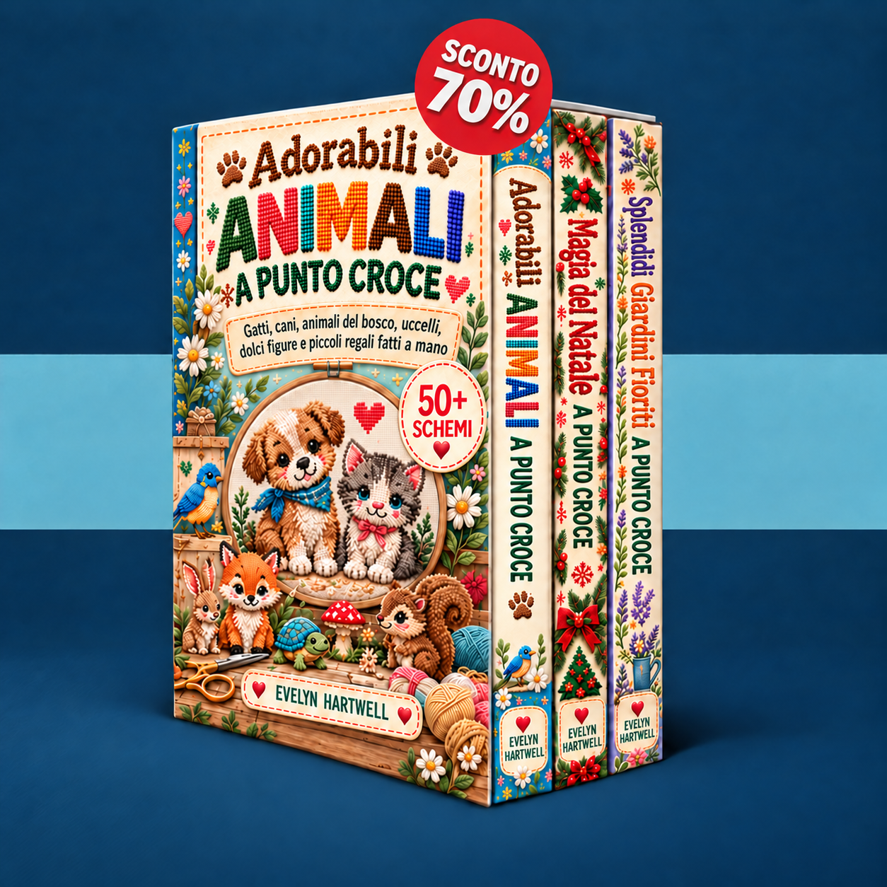

Scegli un piccolo motivo, impara a leggere lo schema e ricama il tuo primo progetto passo dopo passo.
Caricamento dei tuoi schemi…
Attiva JavaScript per usare l’area riservata oppure apri i libri direttamente dai collegamenti qui sotto.
Invia un’e-mail